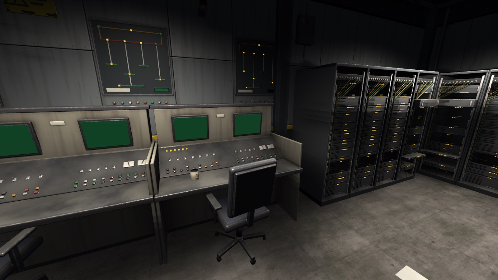
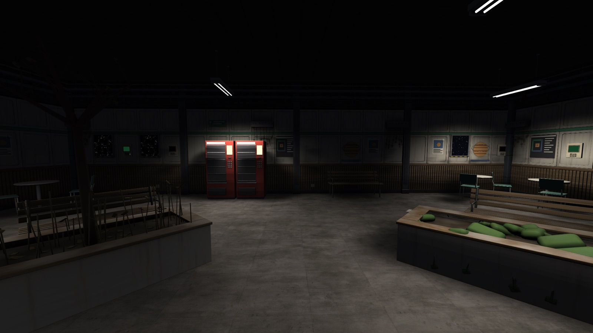
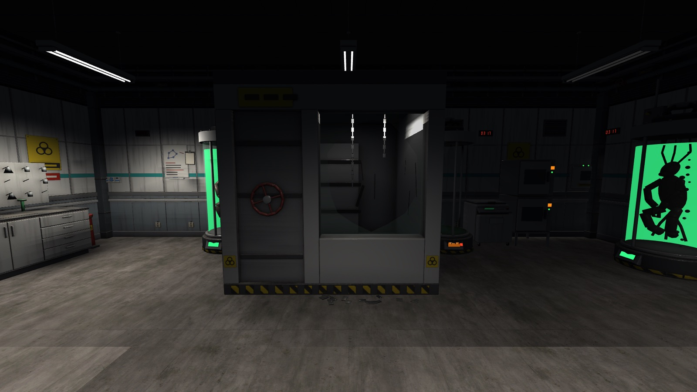
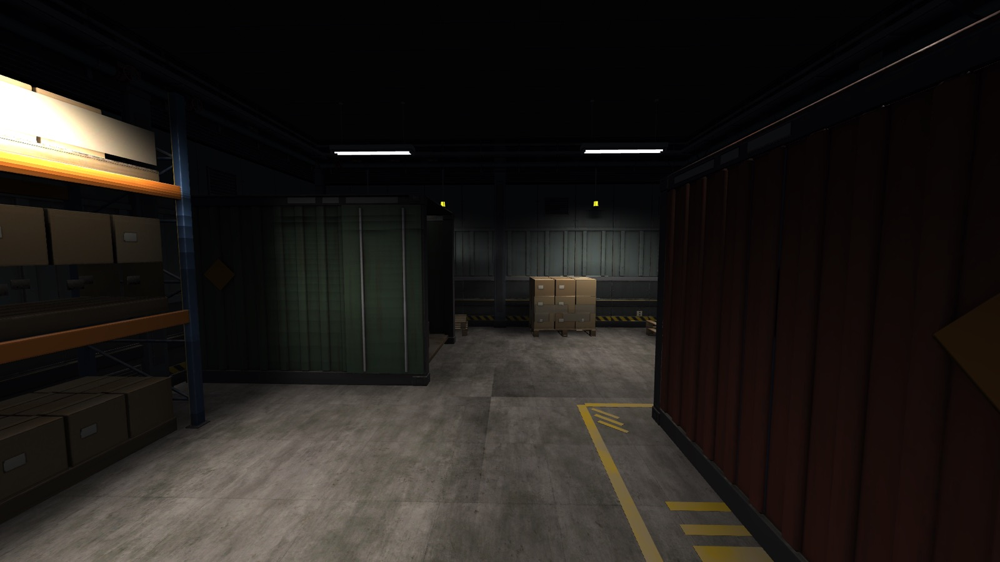
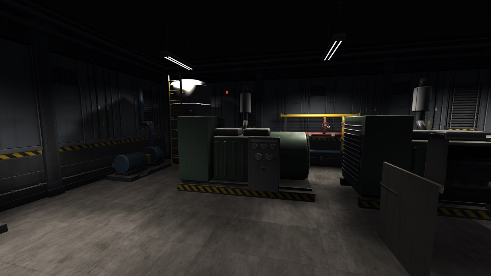
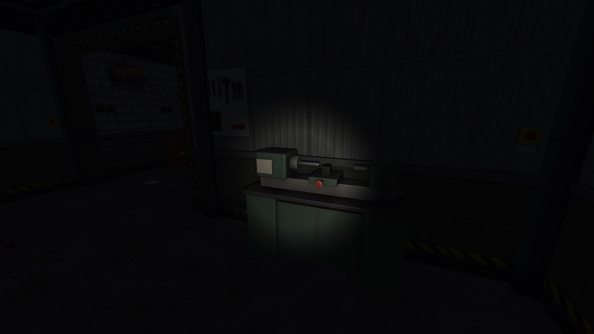

01
02
03
04
Black Hour
1+3
43
2
∞
Movement
VentTraverseCeilingCrawlStopAndGoGazeParalysis
Attack
GrabAndDragAcidSpitScreamStunLaserGaze
Detection
SoundSeekerLightMothDarkStalkerMicrophoneRush
Special
RadarSpooferVoiceMimicPowerDrainerCommsJammer
🎤 MicrophoneRush
👁 GazeParalysis + LaserGaze
P.E.S.T. Terminal
P.E.S.T. — Protocol Entity Signature Tracker v2.1
──────────────────────────────────────────────────
MOVEMENT ATTACK DETECT
[✗] CeilingCrawl [✗] GrabAndDrag [?] SoundSeeker
[✓] WallPhasing [?] AcidSpit [✗] DarkStalker
[✗] StopAndGo [?] ScreamStun [?] LightMoth
──────────────────────────────────────────────────
EVIDENCE: Cold ≤ -10°C → -DarkStalker ✗
Marker thru walls → +WallPhasing ✓
[F1] Evidence [F2] Mark [F5] IDENTIFY






Unity 6 · URP · Netcode for GameObjects · Lobby + Relay · Vivox VoIP
50%